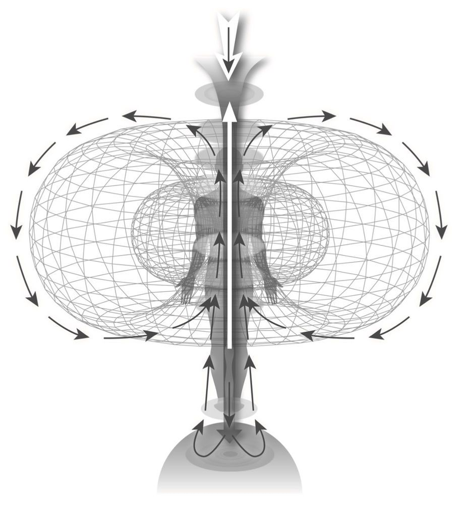
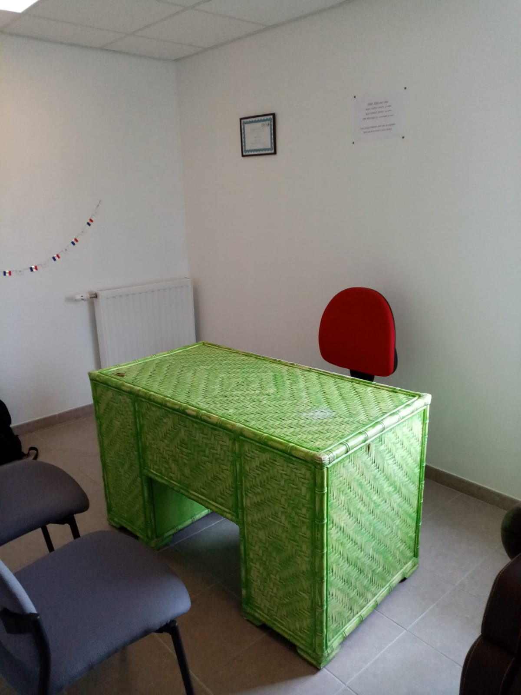

Vasile VERES bioénergéticien
- bilans/équilibrage énergétique, accompagnement bien-être -
Présentation de la thérapie proposée
Le métier de bioénergéticien est encore peu connu. Cependant, on constate un intérêt croissant, de plus en plus de personnes – par simple curiosité, ou parce qu’elles n’ont pas les réponses aidantes ailleurs, ou encore stimulées par des proches ayant déjà « goûté »- cherchent ce genre de thérapies. Mais de quoi s’agit-il? Je ferai de mon mieux pour vous présenter les choses et j’espère vous aider à clarifier les points qui vous semblent importants.
En tout premier rang, je vous propose qu’on se méfie (autant moi que vous) de faire la moindre comparaison à d’autres thérapies/activités énergétiques – chaque chose a sa place et beaucoup sont bien complémentaires. Il reste à chacun(e) de suivre…son instinct, ses ressentis intérieurs et choisir un chemin ou un autre (tout en gardant à l’esprit qu’à tout moment nous sommes en droit de changer de direction, passer sur un autre chemin).
La bioénergétique – comme thérapie- se base sur des principes à la fois de la physique classique et de la quantique (alors qu’elle est une branche de la biochimie!). C’est-à-dire : les interactions entre les champs électro-magnétiques et les forces qui peuvent intervenir et transformées ces pulsations en force motrice, mécanique – étudiées par la physique classique- sont combinées avec le principe des ondes scalaires et les résonances osmotiques, connues plutôt dans la physique quantique.
Comment cela fonctionne-t-il? Une fois que la personne désireuse – on va l’appeler « sujet » (d’une recherche)- donne son accord, avec le thérapeute et l’intermédiaire (qui est une antenne) un circuit se crée. Un circuit par lequel le corps du sujet interrogé fournit des réponses aux questions formulées par le thérapeute et adressées directement…aux cellules du corps investigué. Ainsi, le corps décide et informe sur les possibles actions auxquelles il est prêt à faire face et dans quel ordre – pour retrouver son équilibre. Le générateur du circuit (le thérapeute) cherchant une vibration correspondant à une fréquence choisie par rapport à la question à poser, provoque une onde électro-magnétique qui induit (dans l’intermédiaire – l’antenne) un courant de Foucault qui rend l’antenne sensible aux forces de Laplace. Résultat : l’énergie électro-magnétique est convertie (par résonance et rupture d’équilibre) en énergie mécanique. Cela mène à un basculement de l’instrument – que l’on traduit en réponse à la question.
La physique quantique intervient au niveau des ondes émises – qui ne seront pas des ondes électro-magnétiques en 2D, mais en fait des ondes scalaires, qui ont une structure 3D. Elles forment des vortex d’énergie, rendant l’information plus pénétrante, plus profonde. Les résonances osmotiques auront lieu entre la puissance du principe actif des certains produits utilisés (huiles essentielles, minéraux, oligo-éléments…) et les ondes émises par le corps du sujet confirmant -ou pas- le besoin du moment.
Et voilà comment le thérapeute réussit à trouver des réponses, des solutions possibles pour aider le corps du sujet à retrouver son équilibre. Le tout lié aux réponses des cellules du corps et aux résonances dans l’interaction entre le générateur (thérapeute), l’intermédiaire (l’antenne) et le sujet qui est – à tout de rôle- émetteur des informations recherchées , puis récepteur du principe actif du(des) produit(s) qui lui est(sont) nécessaire(s).
Bien évidemment, il n’est jamais garanti l’effet immédiat – souvent plusieurs bilans ou soins spécifiques étant nécessaires, selon l’ancienneté/profondeur du problème déstabilisant qui provoque le déséquilibre.
Espérant d’avoir été assez clair et que les choses vous semblent maintenant plus simples, je vous invite à réfléchir et…décider de venir me voir pour vous donner la chance de poser les questions restées sans réponse.
A bientôt – si vous auriez besoin de plus de temps pour réfléchir, revenez au moins ici, peut-être trouverez-vous d’autres articles postés qui vous aideront. J’estime pouvoir compter aussi sur des témoignages des personnes que je suis déjà. Je suis en attente de ces retours.

Témoignages
Informations pratiques
Vous avez tout (ou partiellement) lu jusqu’ici? Les autres articles/thèmes postés sur ce site, je veux dire. Bravo! Et merci pour votre patience!
Maintenant, si vous êtes là, on va supposer que vous êtes vraiment intéressé(e) et alors…je vous dois la suite, non? C’est-à-dire les infos qui pourront vous emmener à moi, au cabinet. Avant tout, il serait bien que vous me contactiez – soit par mail (vasyridi108@gmail.com), soit au téléphone : 07 82 20 94 04 (SMS ou appel).
Une fois établi le contact (et le rendez-vous, de préférence..), vous devez vous déplacer vers la commune d’Etriché (sauf si vous habitez trop loin et..vous optez pour les bilans à distance). Quand vous serez arrivé(e) dans la commune, le cabinet se trouve dans l’espace L’Harmonia, l’adresse est : 5B rue du Patisseau (code postal 49330). Que vous arriviez du côté d’Angers ou Mans, vous allez traverser la commune vers l’église, après vous montez vers le cimetière et…l’espace se trouve juste là, face à ce joyeux lieu.

Avant de prendre le rendez-vous, je vous précise aussi les tarifs (espérant que ce « détail » ne vous refroidira pas..) :
- Pour un bilan complet (le plus indiqué toujours, pour aller au plus profond et faire « le point ») : 50 euros, (40 euros pour enfants).
- Pour un soin plus court (un problème spécifique, si vous croyez/supposez connaitre l’origine et voulez vous limiter à cela) : 30 euros.
- Tarif animaux : 30 euros.
Peut-être est-il bon à savoir aussi que j’offre un premier bilan à une personne ( ou animal..) de votre entourage – si vous avez pris votre bilan et désirez faire découvrir à vos proches.
Je précise aussi que les bilans/soins se font INDIVIDUELLEMENT – si quelqu’un accompagne (son enfant, son mari/épouse…) sera prié(e) de patienter dans la salle d’attente. Question pratique et d’éthique.
Je crois avoir donné les infos nécessaires/utiles – sinon, n’hésitez pas de me contacter pour en avoir plus. Et si jamais mon portable est éteint (vous tombez sur le répondeur) cela veut dire que je suis en bilan/soin et vous pourrez me laisser un message (vocal ou SMS) ou réessayez.
Si jamais vous attendez pour la partie « témoignages » -encore en construction-, sachez que moi aussi…j’attends pour faire un recueil de retours assez intéressant à poster/lire. Merci encore de votre attention et patience, à bientôt!
Important à savoir !
Une chose qui est loin d’être anodine : pour toute personne désirant me voir (pour un bilan/soin, évidemment..) et ayant un traitement médical en cours, il serait convenable de venir au cabinet avec tous les médicaments – surtout s’il s’agit d’une médication « lourde », à vie ou à long terme. Pourquoi vous demander une chose pareille? Je vous le dirais : comme très probablement vous le savez déjà, tout produit pharmaceutique peut avoir des effets secondaires plus ou moins importants, en tout cas pas bienvenus… Il ne s’agit pas toujours forcément d’un médicament mal choisit ou de mauvaise qualité – ce qui compte le plus est le terrain, c’est-à-dire la façon dont votre corps est prêt à accueillir la molécule du médicament. Mais ne vous inquiétez pas – la raison pour laquelle je voudrais que vous apportiez vos médicaments avec vous est là : il est bien possible de trouver un compensateur qui puisse aider à diminuer, voir supprimer, ces effets indésirables qui risquent de vous provoquer des déséquilibres plus ou moins importants. Ceci étant dit, rien n’est décidé en avance, c’est toujours vos cellules qui diront si besoin d’un compensateur et qui le choisiront.